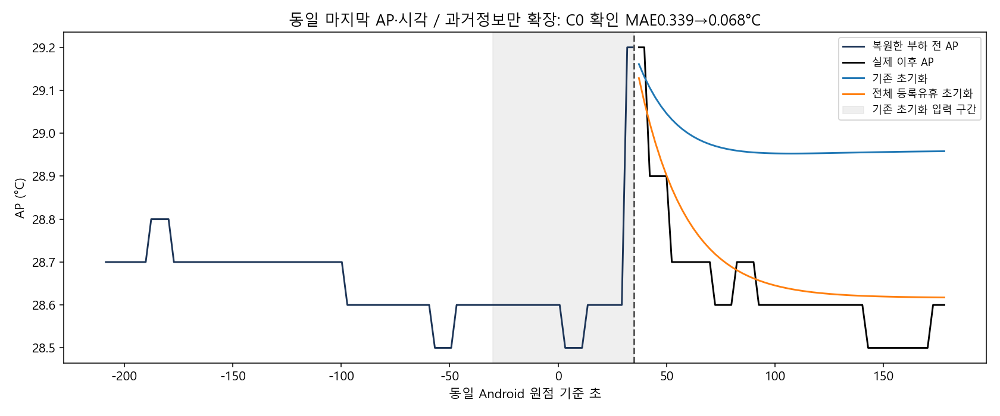
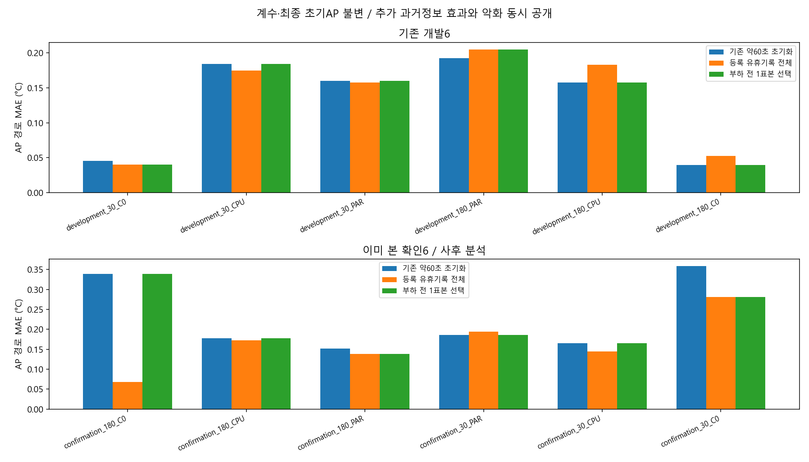
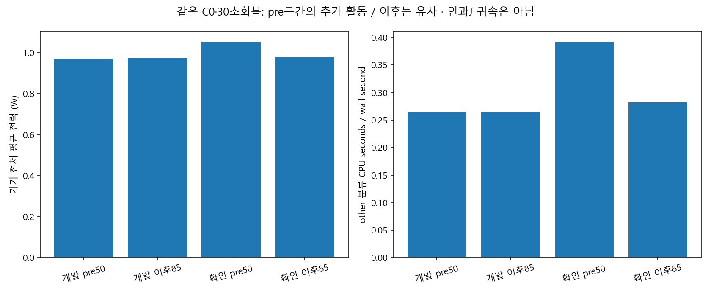

| 확인한 근거 | 실제 결과 |
|---|---|
| AP 초기화 입력 | 약60초 → 등록회복 전체 약91/243초, 모두예측전에확보 |
| 이미본확인6 AP MAE | 0.22962 → 0.16630°C, 개발6은0.13000→0.13560 악화 |
| 같은AP29.2°C C0 | 계수/최종시각불변, MAE0.33886→0.06786°C |
| 같은C0·회복30의pre 전력 | 개발0.97110/확인1.05272W, 이후는0.97500/0.97852W로유사 |
| 같은확인pre의other CPU활동 | 0.39213 core seconds/second → 이후0.28209; 인과J귀속아님 |
근거·설명·다음PC질문 · CSV·원hash·재현 · 검증 · 부하전선택규칙 실패도 보존



전체회복입력만무조건쓰거나마지막한AP표본으로고르는방법은모든조건에서통하지않았습니다. 에너지의다음입력문제는pre 기준값에섞인일시활동의분리입니다. 기존trace가있으므로같은B2를다시측정하기보다그자료로예측가능성을확인할수있습니다. 새실측계획을자동생성하지않았습니다.